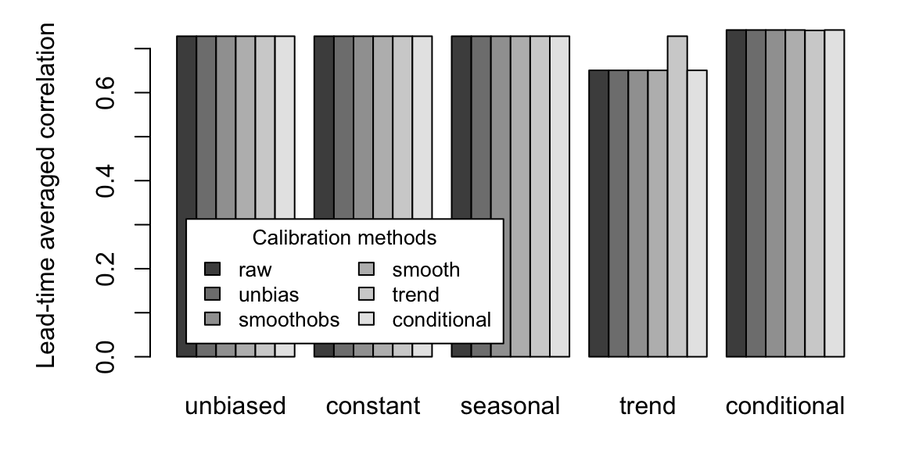
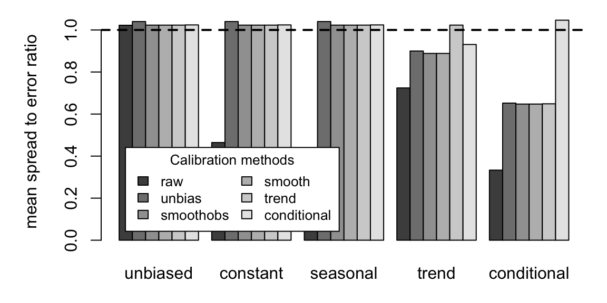
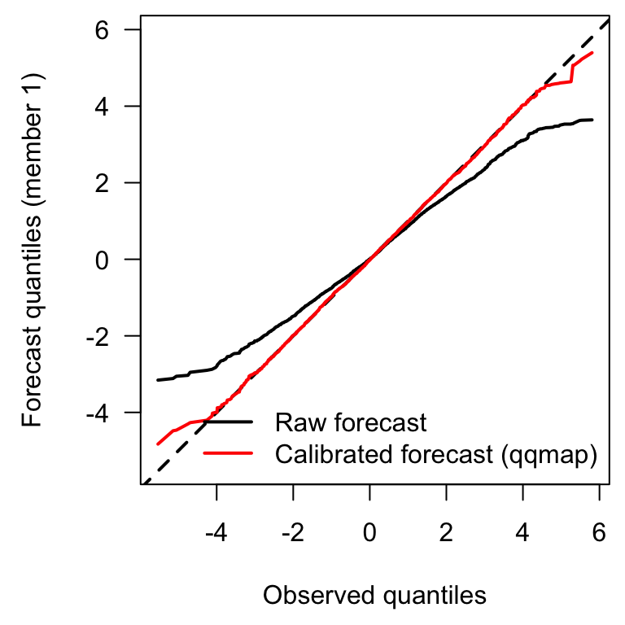
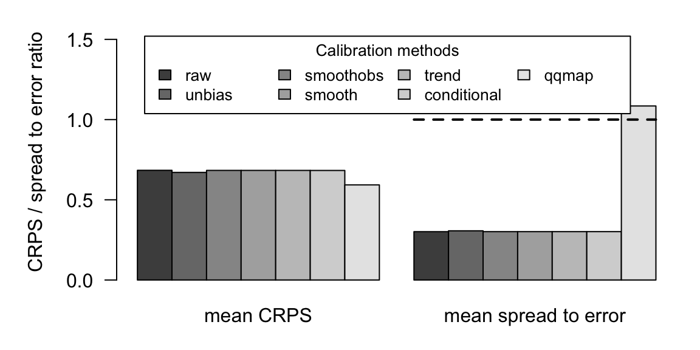
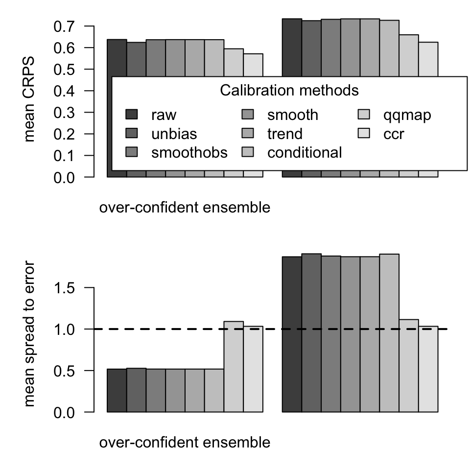
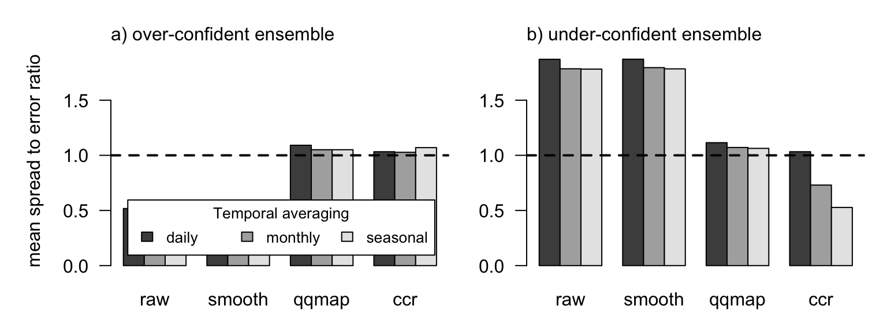

Calibration of daily forecast time series
Jonas Bhend
2020-05-13
Source:vignettes/biascorrection.Rmd
biascorrection.RmdIntroduction
This package contains functionality to bias correct (calibrate) daily time series of weather forecasts. In the following two sections we introduce the package and provide instructions to download, install and use the functionality provided in the package. The reminder of the vignette is used to compare the different calibration strategies on synthetic forecast data.
Installation
The latest version of the package along with the accompanying vignette can be installed from github using
devtools::install_github("jonasbhend/biascorrection", build_vignettes=TRUE)
In case the devtools package is not installed yet, this can be downloaded and installed directly from CRAN.
install.packages('devtools', repos='http://cran.rstudio.com', dependencies=TRUE) library(devtools)
Getting started
The following example illustrates how to use the functionality provided in the biascorrection package.
## load the package library(biascorrection)
## Loading required package: qmap## Loading required package: fitdistrplus## Loading required package: MASS## Loading required package: survival## Loading required package: npsurv## Loading required package: lsei## Loading required package: easyVerification## Loading required package: SpecsVerification##
## Attaching package: 'easyVerification'## The following object is masked from 'package:SpecsVerification':
##
## EnsCorrCalibration functions are called using the debias function. The actual functions providing the functionality to bias correct the daily forecast series, however, are hidden from the user as these have common names that may be in use in the global environment. To find out about the visible and invisible functions in the package and thus the functionality provided in the package, you can use the following commands.
## list the visible functions in the package ls(pos='package:biascorrection')
## [1] "debias" "debiasApply" "iqqmap" "list_methods" "monmean"## list the calibration methods available in the package list_methods()
## METHODS DESCRIPTION
## ccr Climate Conserving Recalibration
## ccrlm Climate Conserving Recalibration (as
## Regression)
## comb Conditional Bias With Linear Time Trend
## conditional Bias Conditional on Forecast
## initial Bias dependent on initial condition
## linmod Linear Models for Bias Correction
## monthly Daily Calibration with Monthly Mean
## moving Moving Window Mean De-biasing
## mul Multiplicative De-biasing
## qqmap Quantile Mapping
## smooth Mean De-biasing With Smoothing of Daily
## Climatology
## smooth_mul Multiplicative De-biasing With Smoothed
## Climatologies
## smooth_scale Smoothed Mean De-biasing With Variance Scaling
## smoothobs_mul Multiplicative De-biasing With Smoothed
## Observation Climatology
## smoothobs_scale Mean De-biasing With Variance Scaling
## trend Bias With Linear Time Trend
## useqmap Quantile Mapping Using the 'qmap' PackageTo get started please run the examples provided with the functions (e.g. example(ccr)) and check out the corresponding help pages.
Forecasts and observations
In order to compare the advantages and limitations of the various calibration methods, we compare the calibration methods on forecast observation pairs with set properties. For example, we contrast the calibration with a linear time dependency of the bias (i.e. the trend function) with other calibration methods using synthetic forecasts with a linear trend in the bias. That is, we set up a hierarchy of synthetic forecast observation pairs, with increasingly complex error structures. We use forecast and observation pairs for 215 lead times, 30 forecast instances (years) and 15 ensemble members. We start with the most simple forecast observation pairs, where the forecast is unbiased and well calibrated.
nlead <- 215 nfcst <- 30 nens <- 15 ## seasonal cycle plus an additive signal signal <- outer(sin(seq(0,4,length=nlead)), rnorm(nfcst), '+') obs <- signal + rnorm(length(signal)) f <- list() f[['unbiased']] <- array(rnorm(nlead*nfcst*nens), c(nlead, nfcst, nens)) + c(signal)
Next we add a constant error.
f[['constant']] <- f[['unbiased']] + 2
Furthermore, we add a constant error with a smooth seasonal cycle.
We continue by adding a linear time trend in the seasonally varying error.
Finally, we construct a forecast for which the bias depends on the forecasted signal.
f[['conditional']] <- f[['unbiased']] + c(1.2*(signal + 2))
Calibration (bias correction)
Next we compute the calibrated forecast from the synthetic forecasts using various methods.
## array with forecast times fc.time <- array(as.Date(paste0(1980+rep(1:nfcst, each=nlead), '-11-01')) - as.Date('1981-11-01') + rep(1:nlead, nfcst), c(nlead, nfcst)) + as.Date('1981-11-01') methods <- c('unbias', 'smoothobs', 'smooth', 'trend', 'conditional') fcal <- lapply(f, function(fcst){ out <- list(raw=fcst) for (m in methods) out[[m]] <- debias(fcst, obs, method=m, fc.time=fc.time) return(out) })
Skill of the calibrated forecasts
Mean bias
We first analyze the mean bias and the root mean squared error to find out what calibration method works best in what circumstances.
bias <- lapply(fcal, lapply, function(fcst) mean(fcst - c(obs))) rmse <- lapply(fcal, lapply, function(fcst) sqrt(mean((fcst - c(obs))**2))) par(mar=c(3,5,1,1)) barplot(sapply(rmse, sapply, function(x) x), beside=TRUE, legend=TRUE, args.legend=list(x='topleft', inset=0.05, ncol=2, cex=0.83, bg='white', title="Calibration methods"), ylab='Root mean squared error')

Correlation
Next we analyse the correlation of the verifying observations with the ensemble mean of the forecasts as a measure of forecast skill.
corr <- lapply(fcal, lapply, function(fcst) diag(cor(t(obs), t(rowMeans(fcst, dims=2))))) corr.mn <- lapply(corr, lapply, function(x) tanh(mean(atanh(x)))) par(mar=c(3,5,1,1)) barplot(sapply(corr.mn, sapply, function(x) x), beside=TRUE, legend=TRUE, args.legend=list(x='bottomleft', inset=0.05, ncol=2, cex=0.83, bg='white', title="Calibration methods"), ylab='Lead-time averaged correlation')

Continuous ranked probability score
We continue by analyzing a more integrated measure of forecast skill, the continuous ranked probability score (CRPS). CRPS is a generalisation of the mean absolute error for probabilistic forecasts and thus the lower the CRPS, the higher the skill of the forecast.
crpsfun <- function(fcst, obs){ nlead <- nrow(obs) nfcst <- ncol(obs) nens <- dim(fcst)[3] crps.out <- array(NA, dim(obs)) for (i in 1:nlead){ crps.out[i,] <- sapply(1:nfcst, function(n) mean(abs(fcst[i,n,] - obs[i,n])) - sum(dist(fcst[i,n,]))/nens/nens) } return(crps.out) } crps <- lapply(fcal, lapply, crpsfun, obs=obs) crps.mn <- lapply(crps, lapply, mean) par(mar=c(3,5,1,1)) barplot(sapply(crps.mn, sapply, function(x) x), beside=TRUE, legend=TRUE, args.legend=list(x='topleft', inset=0.05, ncol=2, cex=0.83, bg='white', title="Calibration methods"), ylab='mean CRPS')

Spread to error ratio
Finally, lets compute the spread to error ratio as a measure of whether the forecasts are reliable, that is, whether forecast probabilities are equal to observed frequencies on average. A spread to error ratio of about 1 is a necessary (but not sufficient) condition for the forecasts to be reliable. Forecasts with a spread to error ratio of less than 1 are called overconfident, meaning that the verifying observations lie more often oustide the envelope of forecasts than expected. As none of the calibration methods analysed here affects the intra ensemble spread of the forecasts, the spread to error ratio basically is a function of the mean squared error (with respect to the ensemble mean) of the forecasts. Therefore, the spread to error ratio indicates how well the calibration methods are able to remove systematic biases.
sprerrfun <- function(fcst, obs){ nlead <- nrow(obs) nfcst <- ncol(obs) nens <- dim(fcst)[3] spr <- apply(apply(fcst, 1:2, sd)**2, 1, mean) err <- apply((rowMeans(fcst, dims=2) - obs)**2, 1, mean) return(sqrt((nens + 1)/nens * spr / err)) } sprerr <- lapply(fcal, lapply, sprerrfun, obs=obs) sprerr.mn <- lapply(sprerr, lapply, mean) par(mar=c(3,5,1,1)) barplot(sapply(sprerr.mn, sapply, function(x) x), beside=TRUE, legend=TRUE, args.legend=list(x='bottomleft', inset=0.05, ncol=2, cex=0.83, bg='white', title="Calibration methods"), ylab='mean spread to error ratio') abline(h=1, lwd=2, lty=2)

Here we find that calibrated forecasts with simple additive biases (e.g. the unbiased, constant and seasonal cases) are rendered reliable using all calibration methods. Forecasts with a trend in the bias or a bias dependent on the signal are only reliable when calibrated with the corresponding calibration method. With all other calibration methods, biases remain and thus the mean squared error is much larger than the average spread of the forecasts.
Non-parametric calibration (quantile mapping)
So far, we have only calibrated biases in the mean, assuming the higher moments of the forecast distribution are unbiased with respect to the verifying observations. Using quantile mapping, calibration can be extended to the full forecast distribution in a non-parametric way. As the name implies, forecasts are mapped to observed quantiles according to the forecast quantiles in which they fall. To compare quantile mapping with other calibration methods, we set up a new set of synthetic forecasts with daily variability that is markedly different from the observed daily variability.
## set up forecast with uniformly distributed daily values fcal[['unif']][['raw']] <- array(runif(nlead*nfcst*nens, min=-0.5, max=0.5), c(nlead, nfcst, nens)) + c(signal) ## calibrate forecast using different methods methods <- c('unbias', 'smoothobs', 'smooth', 'trend', 'conditional') for (m in c(methods, 'qqmap')){ fcal$unif[[m]] <- debias(fcal[['unif']][['raw']], obs, method=m, fc.time=fc.time, anomalies=TRUE) } par(mar=c(4.5,4.5,0.5,0.5)) plot(sort(obs), sort(fcal$unif$raw[,,1]), lwd=2, asp=1, type='l', xlab='Observed quantiles', ylab='Forecast quantiles (member 1)', las=1) abline(c(0,1), lwd=2, lty=2) lines(sort(obs), sort(fcal$unif$qqmap[,,1]), lwd=2, col=2) legend('bottomright', c("Raw forecast", "Calibrated forecast (qqmap)"), lwd=2, col=1:2, bty='n')

We do not repeat all verification metrics shown above but directly summarize and compare the quantile mapping with other calibration methods using the mean CRPS and spread to error ratio.
funifscore <- list() funifscore[['mean CRPS']] <- lapply(fcal$unif, function(x) mean(crpsfun(x, obs))) funifscore[['mean spread to error']] <- lapply(fcal$unif, function(x) mean(sprerrfun(x, obs))) par(mar=c(3,5,1,1)) tmp <- barplot(sapply(funifscore, unlist), beside=TRUE, las=1, legend=TRUE, ylim=c(0,1.6), args.legend=list(x='topleft', inset=0.05, ncol=4, cex=0.83, bg='white', title="Calibration methods"), ylab='CRPS / spread to error ratio') lines(range(tmp[,2]) + c(-0.5,0.5)*median(diff(tmp[,2])), rep(1,2), lwd=2, lty=2)

While the CRPS is only slightly lower using quantile mapping compared to other calibration methods that do not affect intra-ensemble spread, the spread to error ratio indicates that quantile mapping is the only one of these calibration methods that produces reliable forecasts.
Climate conserving recalibration
Instead of adjusting the properties of the daily variability in forecasts and thereby achieving reliable forecasts in an ad hoc way, we can also use a more targeted calibration framework to render forecasts reliable. This climate conserving recalibration (@Weigel2008) adjusts the ensemble mean (the predictable signal) and the intra-ensemble spread simultaneously to render reliable forecasts. To test the climate conserving recalibration we set up an over- and under-confident forecast and calibrate and verify these forecasts as in the examples in the previous sections.
## set up under- and over-confident forecasts (no bias) fcal[['over']][['raw']] <- array(rnorm(nlead*nfcst*nens, sd=0.5), c(nlead, nfcst, nens)) + c(signal) fcal[['under']][['raw']] <- array(rnorm(nlead*nfcst*nens, sd=2), c(nlead, nfcst, nens)) + c(signal) ## calibrate forecast using different methods for (m in c(methods, 'qqmap', 'ccr')){ for (conf in c('over', 'under')){ fcal[[conf]][[m]] <- debias(fcal[[conf]][['raw']], obs, method=m, fc.time=fc.time, anomalies=TRUE) } } fconfscore <- list() for (conf in c('over', 'under')){ fconfscore[[conf]][['mean CRPS']] <- lapply(fcal[[conf]], function(x) mean(crpsfun(x, obs))) fconfscore[[conf]][['mean spread to error']] <- lapply(fcal[[conf]], function(x) mean(sprerrfun(x, obs))) } par(mfrow=c(2,1), mar=c(3,5,1,1), oma=c(0,0,0,0)) for (nm in names(fconfscore$over)){ barplot(cbind(`over-confident ensemble`=unlist(fconfscore$over[[nm]]), `under-confident ensemble`=unlist(fconfscore$under[[nm]])), beside=TRUE, , las=1, legend=(nm == names(fconfscore$over)[1]), args.legend=list(x='bottomleft', inset=0.05, ncol=3, cex=1, bg='white', title="Calibration methods"), ylab=nm) if (nm == 'mean spread to error') abline(h=1, lwd=2, lty=2) }

We find that the CRPS is slightly reduced using the recalibration method compared to other calibration methods that do not affect the intra-ensemble spread. The spread to erro ratio, on the other hand is significantly modified with the CCR methods with and without smoothing (ccr and smoothccr respectively). The spread to error ratio of these recalibration methods is very close to one indicating that the recalibrated forecasts may in fact be reliable (note that unity of the spread error ratio is only a necessary but not sufficient condition for reliability). Reliability of daily series, however, does not necessarily imply that forecasts of derived or aggregated quantities such as seasonal averages are reliable after recalibration on the daily series as well. This is illustrated in the following Figure.
## aggregate the calibrated (and raw) series to monthly and seasonal ## assuming 30-day months fmon <- lapply(fcal, lapply, function(x) colMeans(array(x[1:210,,], c(30,7,dim(x)[-1])), dims=1)) fseas <- lapply(fmon, lapply, function(x) apply(x, 2:3, filter, rep(1/3, 3))[-c(1,7),,]) omon <- colMeans(array(obs[1:210,], c(30,7,ncol(obs))), dims=1) oseas <- apply(omon, 2, filter, rep(1/3,3))[-c(1,7),] ## compute crps and spread to error fseasscore <- fmonscore <- list() for (score in c("mean CRPS", 'mean spread to error')){ if (score == 'mean CRPS'){ sfun <- crpsfun } else { sfun <- sprerrfun } fseasscore[[score]] <- lapply(fseas, lapply, function(x) mean(sfun(x, oseas))) fmonscore[[score]] <- lapply(fmon, lapply, function(x) mean(sfun(x, omon))) } dd <- list() for (nm in c('over', 'under')){ dd[[nm]] <- cbind(daily=unlist(fconfscore[[nm]][['mean spread to error']]), monthly=unlist(fmonscore[['mean spread to error']][[nm]]), seasonal=unlist(fseasscore[['mean spread to error']][[nm]])) } par(mfrow=c(1,2), mar=c(0.5, 3, 0.5, 0.5), oma=c(2.5,2,2,0.5)) for (nm in names(dd)){ barplot(t(dd[[nm]][-c(2:3,5:6),]), beside=TRUE, legend=(nm == 'over'), ylim=range(0, dd), las=1, args.legend=list(x='bottomleft', inset=0.05, ncol=3, cex=0.83, bg='white', title="Temporal averaging")) abline(h=1, lwd=2, lty=2) axis(3, at=par('usr')[1], paste0(letters[match(nm, names(dd))], ') ', nm, '-confident ensemble'), hadj=0, tick=FALSE, line=-0.5) if (nm == names(dd)[1]) axis(2, at=mean(par('usr')[3:4]), 'mean spread to error ratio', tick=FALSE, line=2) }

Here we find that the recalibration of daily series from an over-confident ensemble results in a spread to error ratio very close to unity for the daily, monthly and seasonal forecasts. In contrast, recalibration of an uncer-confident ensemble results in decidedly over-confident monthly and seasonal forecasts derived from the recalibrated daily series. This is an effect of the limited ensemble and forecast size and the thus resulting sampling uncertainty of the mean signal and its correlation with the observations. Due to the sampling uncertainty of correlation, the daily recalibration affects both the intra-ensemble variability and the mean signal, even though the mean signal is unbiased and should not be affected. Sampling uncertainty is less of a problem with over-confident forecasts, as the samping uncertainty in the ensemble mean of an over-confident forecast is smaller due to the lack of intra-ensemble variance. Real forecasts, however, do not follow the simple model of over- and under-confidence as used here, and thus the conclusions drawn from our analysis of synthetic forecast observation pairs may only hold to the extent that recalibration of daily series does not necessarily lead to well calibrated (reliable) forecasts of aggregated or derived indices from the recalibrated daily series.